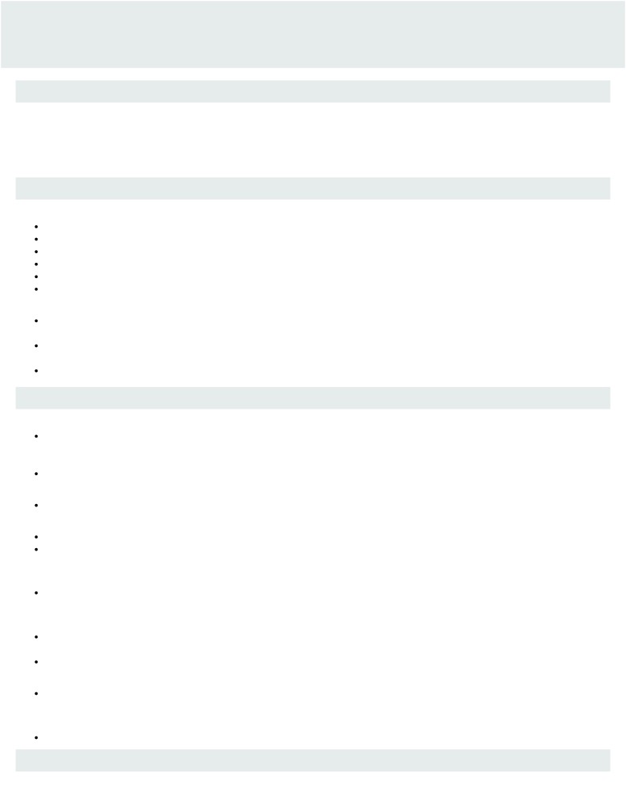

gmudbhat@uwaterloo.ca
(+1)5197292861
GAURAV MUDBHATKAL
University of Waterloo
linkedin.com/in/gmudbhat
gaurav613
MANAGEMENT SCIENCES &
ENGINEERING
SKILLS
Programming Languages: Python, Java, Scala, HTML/CSS, R, C++
Data: Spark, SQL, Pandas, Tensorflow, Tableau/Excel, BigQuery
Tools and Technologies: Git/Command Line, Windows/Linux, Jenkins, Google Cloud, Maven, Airflow, Zeppelin
Project Management: Scrum, Process Analysis, Report Writing, Problem Solving, Communication(French/Hindi)
WORK EXPERIENCE
Data Analytics Co-op · BBM (BlackBerry Messenger)
Jan. 2019 to Apr. 2019 · Mississauga, Ontario
Modified ETL processes with SparkSQL and Scala- transforming raw data into clean, organized tables written to BigQuery
Simplified complex data transforms in an Apache Spark environment, by scripting utility functions with Scala
Identified errors in failing ETLs with the help of schedules and logs in Apache Airflow
Investigated sudden spikes in data using Tableau and Apache Zeppelin
Enhanced CI/CD of the pipeline by providing easier access to Jenkins scripts via version control
Configured dependencies in Maven to generate complete documentation of the codebase
Junior Developer · Perpetuuiti
May 2018 to Aug. 2018 · Pune, India
Developed an Object Detection application from scratch with Python - utilized the Deep Neural Networks module in the OpenCV
library to detect 20 different classes of objects by utilizing a pre-trained model
Built, trained and tested a simple Convolutional Neural Network(CNN) using Keras and TensorFlow to detect objects of classes
present in the CIFAR-10 image set, achieved an accuracy of 92.3%
Gained valuable knowledge in AI and Machine Learning concepts through online courses and material provided by the mentor
PROJECTS AND EXTRACURRICULAR ACTIVITIES
Kaggle Competitions
Performed exploratory data analysis and feature engineering on the given dataset with the help of the pandas library to predict the
survival of passengers on the Titanic using models from the scikit-learn library - attained an accuracy of 81.1% using the
SVC(Support Vector Classification) model
Implemented a deep neural network using Tensorflow and Keras to recognize handwritten digits with an accuracy of 98.8%
Improving the CI/CD of the code for WATonomous- UW's Student Self Driving Car Team- using various DevOps tools
Personality Matching Application
Independently created an application in Python that displays the top 5 similar traits between any two people - based on their tweets
Utilized the Twitter API to gather tweets from both accounts & implemented IBM Watson's Personality Insights API to find out and
compare the traits of both the personalities
Decision Support Tool
Built a Decision Support Tool using Excel and VBA that made the process of finding an optimal meeting spot and time for all
members of the team more effective and efficient-included features like task assignment, and a live crowd reporting feature
Hotel Management System
Developed a Hotel Management System using Turbo C++, which allowed the user to check availability, book rooms, modify/cancel
reservations and view customer records/reviews
Implemented text/binary files to store user data, and constructed a variety of functions to carry out all necessary operations
MSCI 100 Case Days
Analyzed different processes and came up with solutions to make them more efficient using different Management Engineering
Techniques
Car Racing Game
Developed an arcade-style car game using the pyGame library in Python.
EDUCATION
University of Waterloo, Waterloo, Ontario, Canada
2017 to Current
BASc Honors Management Engineering 2022